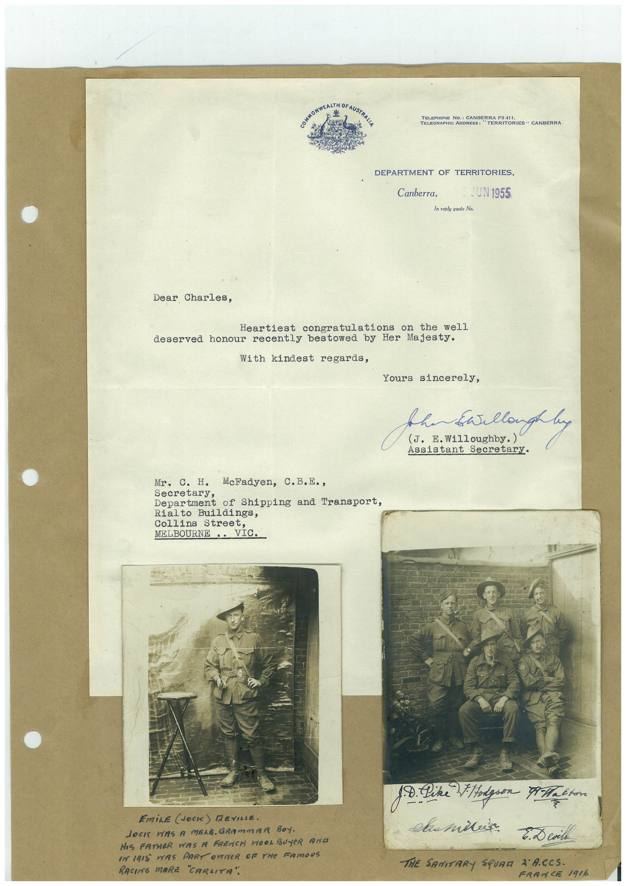

Book 1 · scan 154


Description
Transcription
Context
Review notes
Compare the machine draft with the scan. Handwriting and names need human review.
Artifacts
Edit the artifacts field in this note’s frontmatter to change these records. This summary is generated.
B01-S154-A01 — Letter, Photo & Handwritten note — Book 1, scan 154
Types: Typed document, Letter, Photo, Handwritten note
Scope: Whole scanned page; individual items can be split out during review.
Caption: Not mapped yet.
Caption source: Not recorded yet.
Caption status: unmapped
Machine transcription
TELEPHONE NO.: CANBERRA F0 411 "TERRITORIES " CANBERRA DEPARTMENT OF TERRITORIES, Canberra, JUN 1955 In reply quote No. Dear Charles, Heartiest congratulations on the well deserved honour recently bestowed by Her Majesty. With kindest regards, Yours sincerely, Assistant Secretary. Mr. C. H. McFadyen, C.B.E., Department of Shipping and Transport, Rialto Buildings, Collins Street, MELBOURNE.. VIC. EmiLE JOCK) DEVILLE. JOCI WAS A MELB. GRAmmAR BOY. HIS FATHER WAS A FRENCH WOOL BUYER AND IN I9I5 WAS PART OUTER OF THe FAMOUS RACING MARE "CARLITA". 18. Dike Podgion Meet світіня E. D evil THE SANITARY SQUAM 2 ACCS. FRAMCE 1916